先把冲突说清
现在，同一段路同时要供骑手补货、商户短停和居民通行。
这些需要会撞在一起，所以不能只看其中一方是否方便。

01 / 12
京张·发现线
JING-ZHANG DISCOVERY LINE
同一段路缘，会同时被骑手补货、商户短停和居民通行使用。AI 只比较几种做法对不同人的影响，不替人决定。人工接手失败时，就停用 AI，恢复原状和非 AI 时刻表，让日常任务继续。
与正文一致：愿景总图以一脊、双轨、三站组织校准、退役和证据解释机制；图面是概念推演，不是现状、法定比例、已批规划或建设结果。
AI 概念示意｜非现状｜不按比例。
图中范围、站点、设施、活动和时序均为概念表达；准确边界、用地、权属、建设条件与实施安排仍须依据正式资料复核。
现在，同一段路同时要供骑手补货、商户短停和居民通行。
这些需要会撞在一起，所以不能只看其中一方是否方便。
先把固定装卸时段、静态车位和人工引导作为不用 AI 也能运行的办法。
再与可撤回的匿名调度、由专业团队深化路缘的办法比较。AI 只看合在一起的数据，不追踪或考核个人骑手。
有权主体与受影响的人决定继续、修改、不采用或撤除；AI 不自动作决定。
人工接手失败时，就停用 AI，恢复原状和非 AI 时刻表，日常任务继续。
发现护照 M01｜同一问题的记录编号
这里的“发现护照”不是一张卡，而是一份跟着问题走的记录。
它不是通行卡、门票、感应凭证或自动开关。
失败时怎么办
先恢复原状和非 AI 时刻表，让日常任务继续，再由人决定下一步。
做什么：让城市问题先过验证，再由公众决定继续、修改或撤除。
在哪：43.6 km²统筹、11.4 km²总体、368.4 ha三重点区。
何时停：未批准不启动；接手失败即熄灭并复原。

与正文一致：测量、施工、列车、隧道与桥梁的白描只交代京张工程史的问题来路
与正文一致：测量、施工、列车、隧道与桥梁的白描只交代京张工程史的问题来路，是历史工程想象图，不是历史照片、精确复原或当下证据。

与正文一致：铁路遗存轴与当代街区之间的断带和通行冲突只作为现状问题的概念表达
与正文一致：铁路遗存轴与当代街区之间的断带和通行冲突只作为现状问题的概念表达，不是测绘、正式边界或已核现场结论。

与正文一致：四足巡检机器人沿保留铁轨提示松脱扣件，维护人员用手持终端复核
与正文一致：四足巡检机器人沿保留铁轨提示松脱扣件，维护人员用手持终端复核；这是“AI 提示、人工核验”的概念图，不证明设备、点位或巡检已存在。
尺度校核：以站立人物 1.70 m、视高 1.55 m 为校核基准，复核维护员、巡检机器人、保留铁轨与步道的相对尺度；当前图未建立可量取比例，结果为 UNKNOWN。

与正文一致：同一遗存轨轴在概念未来中回到日常公园生活
与正文一致：同一遗存轨轴在概念未来中回到日常公园生活，遮荫、照明、养护、取景和复测设施均不表示已建成，点位、数量、责任和运营数据仍为 UNKNOWN。

AI 生成概念图。
一条公共脊按近、中、远串起三座站体；城市、站体、活动和灯光均为概念设定，不表示真实现状或九层数据逐要素实景化。
对应征集任务书：『打造标志性的城市景观节点』。
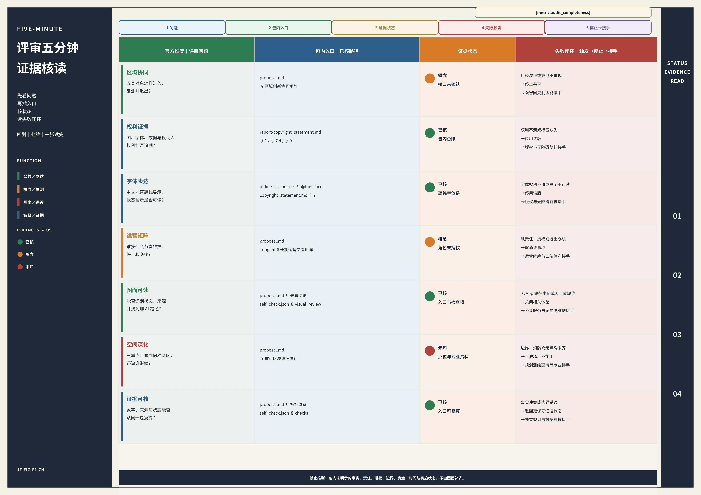
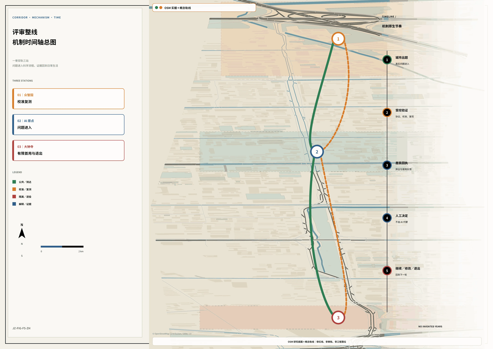
本图为整线机制时序；空间分段见〈图 2｜983 个用地图斑是主角〉。
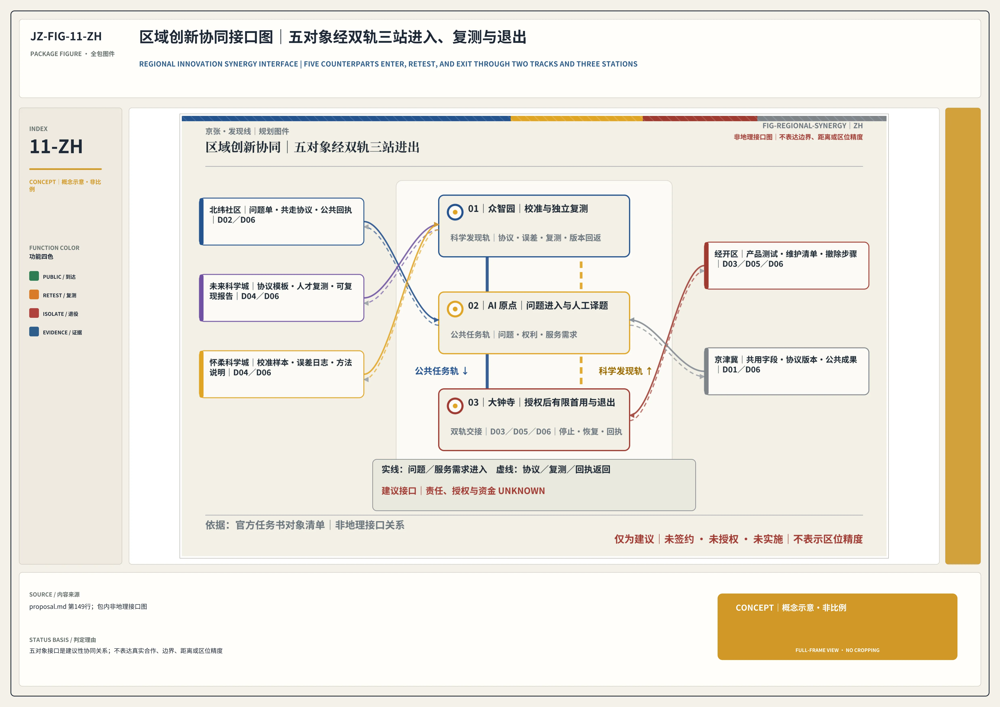
先说不开 AI 的时候。一条街上每天都有拧不清的事：骑手要停车卸货，老人要过马路，商户要开门做生意，同一段路缘谁先用、用多久，划线、贴牌和现场引导可以安排，但真起了冲突，还是得当场解决。
AI 干的是这件事：把这类争执变成可以比较的几个方案，比较每个方案对每一类人的影响，然后把选择权交回给人。 比如那段路缘，它会摆出三个做法——固定时段卸货、动态匿名调度、专业改造路缘——各自比较老人要多绕多远、骑手要多等多久、商户可能少几单。它只出这张对照表，不做决定，也不知道你是谁。
为什么要给它套这么多约束。 因为它算错了，代价不是一次报错，是一个坐轮椅的人今天出不了门。所以它被限制成只碰聚合数据、不碰个人；只做比较、不做排序；只出结论供人看、不接任何开关。
为什么必须留一条完全不用 AI 的路。 因为这条街不是实验室，它每天都得正常运转。这个项目现在没批、没授权、没实施——它随时可能停。停了的时候，卸货、过街、看病、上学不能跟着停。 所以顺序是反的：先把不用 AI 也能走通的日常路径修好，AI 才被允许加在上面；哪天它熄火，就是回到那条一直在那儿的路。
K1
本节说明京张工程史只用于交代问题从哪里来，当前判断仍要看当下证据。
工程史只提供问题的来路，不冒充已清权历史影像。BIND-02
本节用三个时间点交代京张铁路、高铁和本次全球征集的来路。
1909 年铁路建成，2019 年高铁开通，2026 年启动全球征集，接下来让 AI 接受城市检验，只是方案建议。


BIND-01 / FIVE-SECOND CLAIM
本节是一分钟摘要：项目要经过哪些检查、由谁负责，以及失败时怎样回到不用 AI 的日常办法。
城市问题先经科学检验；合格才回到街上，不合格就停止、撤回或恢复原样。
公众版摘要：给你一分钟看懂：六道门与五本账 评委/市民朋友：这份方案还没有被批准，也没有授权实施，更没有在现场发生过，当前状态：未批准 · 未授权 · 未实施；只是桌面模拟｜非现场测试｜不代表真实项目发生过。
项目要往前走，必须穿过六道门：数据与边界、问题价值、科学协议、城市首用、项目与资金、建设运营。每转一段都要留下责任、资料和复核记录；任一门不满足，项目不自动前进。
同时要记五本账：规划设计、公共基础、场景验证、运营维护、社会协同。
谁来做：众智园负责复查；AI 原点把问题说清再验证；大钟寺只有得到同意后才能小范围试用，并随时退出。M01 是唯一展开最深责任链的候选。
目前还不确定：责任人：UNKNOWN；叫停人：UNKNOWN／待正式责任主体确认；复测日：UNKNOWN；恢复费用：UNKNOWN。
保底方案：非 AI 等价路径为固定装卸时段、静态车位与人工引导；个人骑手不被跟踪或考核。万一失败，AI 层熄灭，恢复原状和非 AI 时刻表，日常任务继续。
各场景的人工底线：G01 纸笔、电话、人工编码和联席会，AI 不定优先级；
W01 人工仪器、固定观察点，无真实数据不发布水质或安全结论；R01 正式查询、台账核对和现场联勘；AI 不判产权；R02 使用者和无障碍专业人员人工审计，保留静态导视；
M01 固定装卸时段、静态车位与人工引导，不追踪骑手；H01 电话、纸质目录、人工咨询，不诊断、不分号、不承诺号源；
H02 人工桌面推演，无医院授权不接真实患者数据；E01 教师带队、纸图、人工仪器，不跟踪学生、不自动评分；
C01 门面盘点和人工访谈，不做消费画像或行为操控；C02 人工问询、静态导视、固定活动表和无活动对照日。
BIND-03
本节列出各场景保留的人工办法，并说明普通人和评审分别能查什么。
普通人能看懂要改什么，评审能查到每句话从哪里来，不知道的就写明不知道。
最低公共承诺：未批准 · 未授权 · 未实施
日常协调和排序仍靠纸笔、电话、人工编码和联席会，AI不自动定优先级。
水质与安全结论只来自人工仪器和固定观察点，没有真实数据不发布任何结论。
公共导视和设施由使用者和无障碍专业人员人工审计，静态导视继续保留。
送货上门有固定装卸时段、静态车位和人工引导，不追踪骑手位置。
医疗咨询只通过电话、纸质目录和人工问询完成，不诊断、不分号、不承诺号源。
学生外出由教师带队，使用纸图和人工仪器，不跟踪学生、不自动评分；社区活动靠人工问询、静态导视、固定活动表和无活动对照日安排。
01
SPATIAL ATLAS / 空间范围
本节汇总规划范围、众智园—AI 原点—大钟寺的分工、已知与待核边界，以及哪些空间可以讨论。
众智园负责复测；AI 原点把问题说清再验证；大钟寺只有获得授权后才可能有限首用，并可退出。
一脊承载日常，双轨分开生活与验证，三站完成译题—复测—有限首用。公共任务轨始终连续；科学发现轨只作旁侧、限域、可撤叠层。精确边界与 M01 落点仍待正式资料确认。
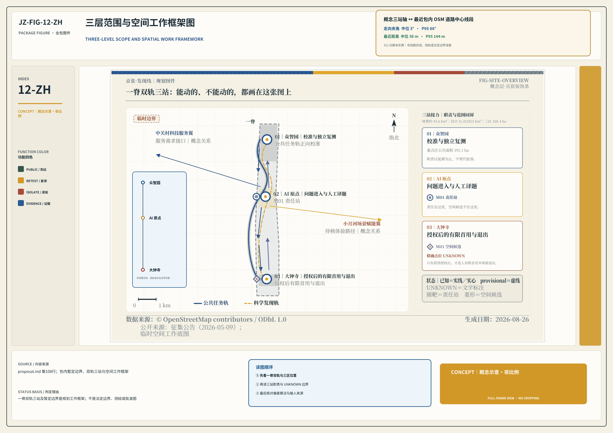
静态图 1 保留为无脚本、运行失败或用户主动选择时的可读后备。
3D GEOMETRY STAGE
九层合成的三维几何舞台
视角与开关只改变演示光效；图层数量与全部读数不变。
本图给全线与三站位置；分段用地见〈图 2｜983 个用地图斑是主角〉的北／中／南三段；机制时序见〈整线时序｜机制顺序示意；非工期、非授权〉。
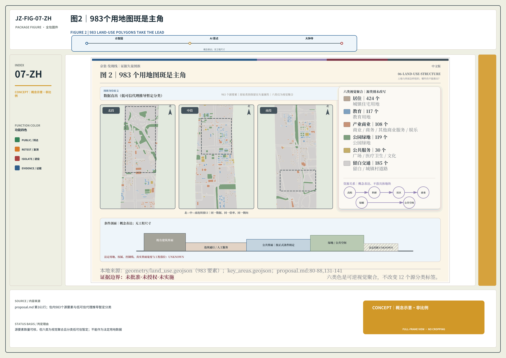
三段为同数据、同倍率、同朝向；三段在全线上的位置见〈三层范围与空间工作框架图〉。
数据直出（低可信代理推导暂定分类）；占比按图斑数量换算，非面积。
官方公告面积与三区名称
W01、M01、C02验证路径
现场复测与精确边界尚未形成
一条公共脊连接公共任务轨与科学发现轨；精确几何与责任主体仍待正式资料确认。
三大定位
百年京张文化带五大功能
AI 全栈自主创新体系三区两翼
众智园AI自主创新加速区 / 北京 AI 原点社区 / 大钟寺AI产业聚集区官方角色要求；空间方向与精确边界仍为 provisional，不替代正式规划或审定结论。
K2
本节先列出老人、骑手、商户、居民和夜班人员遇到的冲突，并标明哪些还要现场复测。
老人、骑手、商户、居民与夜班人员的处境仍待现场复测。02
FOUR DAILY ROUTES / 四段日常
本节按清晨、中午、下午和夜晚，查看四类人怎样办事，以及 AI 停止时人工路线怎样接上。
桌面记录只支持桌面条目及其判定，不证明现场成效、批准、授权或实施。
一个人的一天：【合成标注】以下为桌面模拟的合成叙述，人物为设定人物·非访谈，不来自任何真实访谈或现场。
M01不是物理卡、门票、感应区、自动凭据或实际运行系统。桌面模拟｜非现场测试｜不代表真实项目发生过。
早上，一位设定人物沿街经过，看到路缘同时被骑手补货、商户短停和居民通行争用。M01用同一ID记录问题。
中午，M01把A、B、C三案放在同一ID下，AI只用聚合数据比较：A是固定时段、静态车位、人工引导；B是轻量、可逆、匿名调度，不追踪或考核个人骑手；C是由有权主体与专业团队接手的专业路缘深化。
下午，M01记录有权主体与受影响者人工决定继续、修改、不采用或撤除；当前责任主体仍未确认。
傍晚，桌面模拟中人工接手缺失即NO-GO；AI层熄灭，恢复原状和非AI时刻表，日常任务继续；M01记录停止、恢复与下一轮复测。
责任人：UNKNOWN；叫停人：UNKNOWN／待正式责任主体确认；复测日：UNKNOWN；恢复费用：UNKNOWN。
当前仍是：未批准 · 未授权 · 未实施。
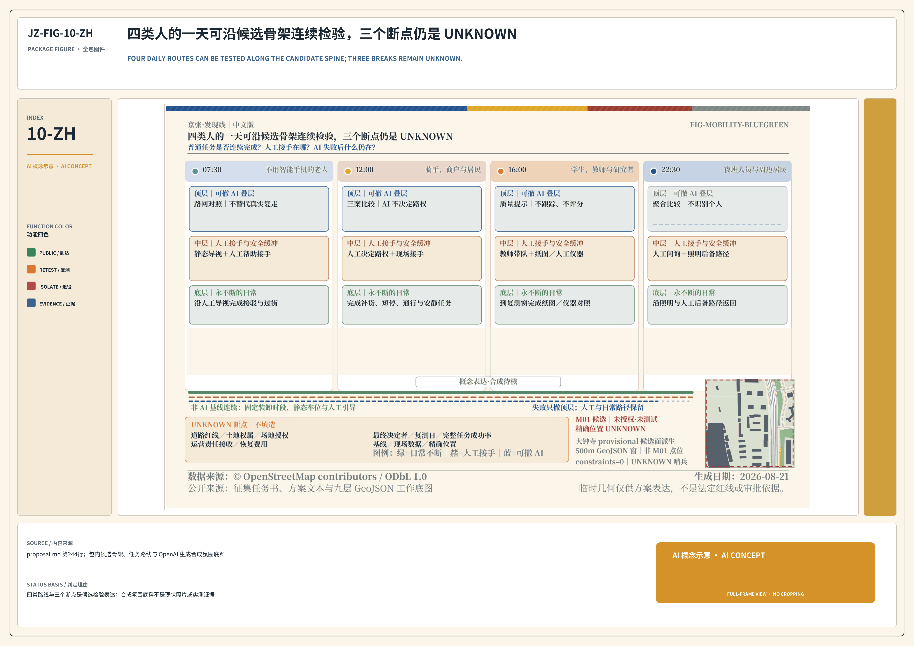
本图给四类使用者一天中的可撤 AI 叠层、人工接手层与永不断的日常层；交通、市政与蓝绿的空间关系见〈钥匙图〉与〈983 个用地图斑〉。
图中各层的数据等级与九层逐层身份见〈AI 开启 / 关闭：消失什么，留下什么〉。
清晨 / 不使用智能手机的老人
非 AI 路径：纸质导视与人工问询；失败时由现场人员接手。
中午 / 骑手、商户、居民
非 AI 路径：固定时段、静态车位与人工引导；失败时停止调整。
下午 / 学生、教师、研究者
非 AI 路径：线下记录、人工复测与公开讨论；失败时回到原流程。
夜晚 / 夜班人员与周边居民
非 AI 路径：固定活动表、静态导视与人工问询；失败时撤回候选安排。

AI 生成概念图。
同一街段以连续光线渐变表达一天，人工服务和公共通道保持不断线。
场地、设施、人物与时段均为设定，非真实运营记录。对应征集任务书：『完善“工作-生活-社交-学习”一体化的城市空间系统』。
与正文一致：同一街段以连续光线表达一天四时段，人工服务和公共通道保持不断线；场地、设施、人物与时段均为设定，不是运营记录。
尺度校核：以站立人物 1.70 m、轮椅坐姿 1.32 m、视高 1.55 m 为校核基准，复核人物、人工服务点、路缘与公共通道的相对尺度；当前图未建立可量取比例，结果为 UNKNOWN，不得据此判定通过。
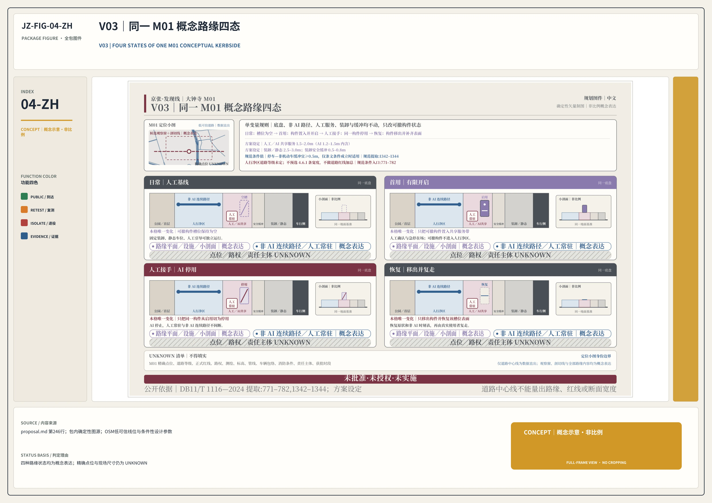
03
C02 / THREE OPTIONS
本节比较三种活动安排和不办活动，对商户、居民、夜班人员和访客分别有什么影响。
商户、居民、夜班人员和访客的得失，按三种做法和不办活动来比较，AI 只整理，最后由人决定。
少声光，先保日常
有限活动，留观测点
高频活动，必须能恢复
固定活动表、静态导视，作为对照。

与正文一致：同一路缘在步行、短停、装卸与无活动对照之间作概念比较，AI 只整理得失，最终取舍仍由人决定；图中状态不是实测或排期。
尺度校核：以同一组人物投影基准复核四个路缘状态中的行人、车辆、装卸界面与路缘关系是否同尺度；当前图未建立可量取比例，结果为 UNKNOWN，不得把画面比较写成实测。
C02 / 谁受益、谁承担、谁拍板
居民、商户、夜班人员与访客，处境并不相同。
人工问询、静态导视、固定活动表与恢复安排。
AI只聚合比较；居民与商户会议取舍，有权主体决定。
UNKNOWN / 待现场基线与人类会议比较
K3
本节说明 AI 只做检索、比较、跟踪和复算，采用、暂停和退出由人决定。
AI 只做检索、比选、追踪与复算，边界和采用由人决定。WHY AI / 为什么需要AI
本节解释为什么使用 AI、它具体负责哪些比较，以及哪些决定始终由人来做。
数据量大、变化快，人算不过来。AI可检索、比选、追踪、复算；边界、采用、暂停和退出都由人决定。
AI不自动决策。它把问题变成可对照的证据，决定仍交还给人。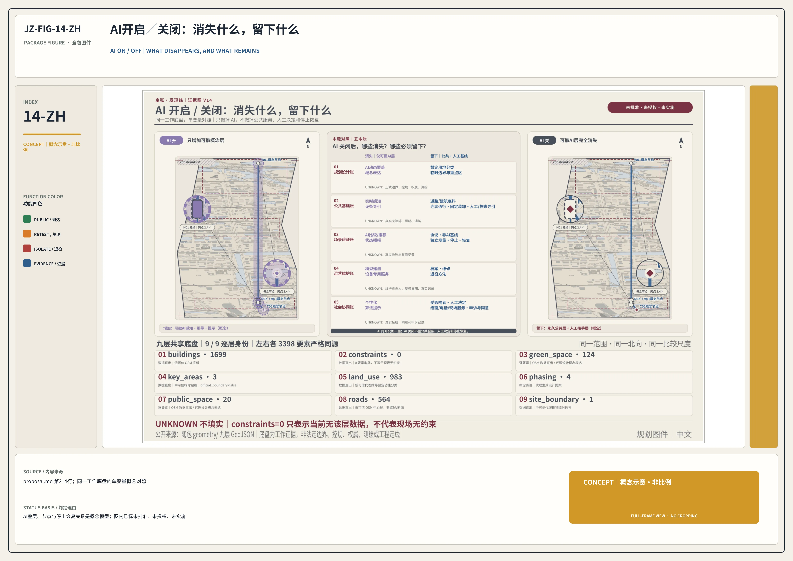
04
M01 DISCOVERY PASSPORT
M01 是本页展开最细的一张任务卡；本节列清谁使用、谁负责、谁能叫停和怎样恢复。
一段路要试，先说清谁负责、拿什么比较、谁能叫停、怎么恢复，缺一项都不试；目前没获批、没获场地许可，也没开始。
M01｜同屏责任卡
M01 / 04
CSS-ONLY FAILURE REPLAY
本节用四种状态说明：先让不用 AI 的日常办法独立可用，再比较方案、检查条件和演示失败恢复。
四态文字结论始终可见；选择标签只切换剖面。四态共用同一 M01 ID，不把桌面模拟写成现场事实。
我们在桌面上跑过的那一次 桌面模拟｜非现场测试｜不代表真实项目发生过 状态声明：当前状态：未批准 · 未授权 · 未实施。 另须防止把机器门的『完整』读成专业深化已完成——前者只指证据链满足当前门禁,专业空间深化仍待具备资质的团队接续。
三态票据：十卡各三态共 30 张票据已合并为单一 JSON 数组；每票含输入摘要、六门判定、依据路径及合成/非现场标记。人工基线与协议比较各 10 张为条件未齐；越线推进 10/10 被规则拒绝。
负向注入：负向注入 14 项，结果 `14 injections / 0 leaks`；覆盖越权、非AI通道缺失、撤回失败、责任空缺、M01 漂移等类型。
该结果仅证明桌面推演内无泄漏，不证明现场。
M01 一轮闭合：M01 通过 Codex 自身模型真实生成 1 轮空间候选：提示词、3 个候选、3 个裁决全部存档，没有删轮或结果性挑选；模型精确服务身份与种子不可得已如实记录。3 个候选均未越过授权、资源和运营条件，现场计数为 0。
整线降级：任一卡复测不过，整条线护照等级降回上一级，禁止只补最差一卡；该记录不是一次真实复测。
权限边界：众智园负责复查；AI 原点把问题说清再验证；大钟寺只有得到同意后才能小范围试用，并随时退出。
责任链（M01）：M01 是唯一展开最深责任链的候选。责任人：UNKNOWN；叫停人：UNKNOWN／待正式责任主体确认；复测日：UNKNOWN；恢复费用：UNKNOWN。
非 AI 与失败恢复：非 AI 等价路径为固定装卸时段、静态车位与人工引导；个人骑手不被跟踪或考核。失败时 AI 层熄灭，恢复原状和非 AI 时刻表，日常任务继续。
双计数：双计数已锁定为：桌面推演 `30/30`、真实复测 `0`、现场 `0`。
小结：边界线 / 桌面模拟｜非现场测试｜不代表真实项目发生过 / 不可删改 桌面票据 / 30/30 / 十卡各三态 负向注入 / 14 injections / 0 leaks / 0 漏检 M01 捕获 / 1 轮；3 个候选；3 个裁决 / 全部存档
真实复测 / 0 / 没有执行 现场 / 0 / 没有执行
当前状态 / 未批准 · 未授权 · 未实施 / 不可删改 责任人 / UNKNOWN / 待正式责任主体确认 叫停人 / UNKNOWN / 待正式责任主体确认 复测日 / UNKNOWN / 恢复费用 / UNKNOWN /
STATE 01
不依赖智能手机，也不依赖 AI；日常路径自身就能闭环。
STATE 02
比选不等于批准、授权或落地；骑手个体不被追踪、不被考核。
STATE 03
当前仍是：未批准 · 未授权 · 未实施。
STATE 04
NO-GO
门 04｜城市首用：人工接手缺失，不满足进入条件。
M01 责任链出现缺口。
AI 层熄灭；日常层保持。
同一 M01 记录回到下一轮复测与公共决定。
桌面模拟｜非现场测试｜不代表真实项目发生过
当前站位
未批准 · 未授权 · 未实施
固定时段、静态车位、人工引导。
轻量、可逆、匿名调度；个人不被追踪或考核。
专业路缘深化；由有权主体与专业团队接手。
责任人：UNKNOWN · 复测日：UNKNOWN · 恢复费用：UNKNOWN
无AI路径与人工接手始终保留；叫停权待正式责任主体确认。
条件窗：30–90 天可撤试验期内，须覆盖雨天复测至少 1 次、早高峰与晚高峰复测各至少 1 次；
假设“雨天与高峰时段路缘冲突加剧”由现场实测证实或证伪；
当前无现场基线，相应数值为 UNKNOWN。
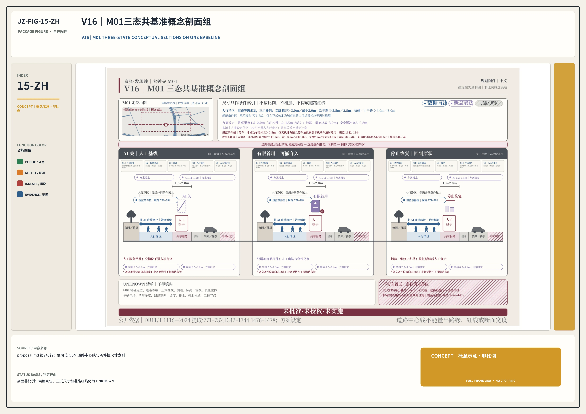
本节解释日常通道为什么不能停、AI 怎样只在旁边受限介入，以及人怎样随时叫停。
本方案借用铁路道岔与联锁的安全意象来解释受约束介入，不主张它们是本场地已核实的历史机制，也不新增任何承诺。
本节逐项比较同一段路边装卸和通行空间在 AI 关闭与开启时，任务、做法、记录、停止和验收有什么不同。
同一 M01 ID 下先把非 AI 路径走通；AI 只作受约束、可撤的比较层。
| 对照项 | AI 关·普通城市（A 案） | AI 开·受约束介入（B 案） |
|---|---|---|
| 任务 | 完成补货、短停、通行与安静使用 | 完成同一组日常任务 |
| 做法 | 固定装卸时段、静态车位与人工引导 | 轻量、可逆、匿名调度；不追踪或考核个人骑手 |
| 记录 | 同一 M01 ID 记录问题、三案、责任与退场 | 五本账与六道门留下责任、资料和复核记录 |
| 熄火 | 不用 AI，日常通道独立闭环 | AI 层熄灭，恢复原状和非 AI 时刻表 |
| 验收 | 任务可完成，人工接手路径保留 | 任一卡复测不过，整条线护照等级降回上一级 |
等价只指任务可完成；体验差异与未验证项仍按附录边界执行，本表不作新承诺。
05
THREE FOCUS AREAS / 三区
本节说明众智园负责再次检查，AI 原点负责先把问题说清，大钟寺负责获授权后小范围试用并退出。
众智园负责复查，AI 原点把问题说清再验证，大钟寺只有得到同意后才能小范围试用，并随时退出。
白发长者在年轻一辈陪行下，沿园路方向横向穿越遗存轨上的可移除垫道；同一对旧轨远处，记录员正测量未铺垫道段的轨面高差，让“能通过／仍是道坎／有人复测”同框成立。
前景细杆装置为试验叫停桩，顶部为工业蘑菇急停钮，不是消防设施。对应征集任务书：『聚焦公园慢行系统断点，创新提出交通系统优化的解决方案』。
披露：AI 生成概念图。叫停桩小标牌为伪文字；现场高差、安全尺寸、坡度、材料、承载、防滑、点位、审批与运维责任均为 UNKNOWN，须由无障碍、遗产保护与运营专业复核。
与正文一致：轮椅使用者在陪行下跨越遗存轨的可移除垫道，记录员在未铺垫段复核高差；垫道、叫停桩、尺寸、点位、审批与运维均是概念表达或 UNKNOWN。
尺度校核：以站立人物 1.70 m、轮椅坐姿 1.32 m、视高 1.55 m 为校核基准，复核轮椅使用者、陪行者、记录员、轨面、垫道与叫停桩的相对尺度；当前图未建立可量取比例，高差、安全尺寸与坡度均保持 UNKNOWN。
AI 生成概念图。
设定人物以语音／手势使用全息城市沙盘；人工席和实体停止开关与 AI 平级。
场地、人物、设施与流程均为概念表达，非已建成或已运营设施。对应征集任务书：『完善成果展示发布、居住生活配套功能』。
与正文一致：设定人物使用全息城市沙盘时，人工席和实体停止开关与 AI 平级；场地、人物、设施与流程均未表示已经建成或运营。
尺度校核：以站立人物 1.70 m、轮椅坐姿 1.32 m、视高 1.55 m 为校核基准，复核设定人物、全息沙盘、人工席与实体停止开关的相对尺度和可达关系；当前图未建立可量取比例，结果为 UNKNOWN。
一座双层通高、天光充足的现代化中国服务大厅中，中老年人指着智能体屏幕发问，办事人员指着桌上纸表逐项解释；大厅内一台台轻薄终端以快拆法兰落地，多位市民同时交流办事，人工窗口和休息区继续满负荷服务。
侧墙注册铭牌与退役盖板、桌侧急停钮和责任公示把智能体纳入可追责、可暂停、可退出的公共服务机制。
对应征集任务书：『重点围绕智能体、智能终端、内容消费等AI原生和AI+融合赋能新业态』。
披露：AI 生成概念图。
屏幕、铭牌与责任公示牌均为伪界面／伪文字；大厅、终端、岗位、流程、责任主体、点位、数量、版本与退役安排均为概念表达或 UNKNOWN，不表示已建设或已授权运行。
与正文一致：快拆终端与人工窗口、纸表、座席、停止和退役界面并存；屏幕与铭牌为伪界面，岗位、责任、点位、数量、版本和退役安排均为概念或 UNKNOWN。
尺度校核：以站立人物 1.70 m、轮椅坐姿 1.32 m、视高 1.55 m 为校核基准，复核使用者、工作人员、快拆终端、人工窗口和座席的相对尺度；当前图未建立可量取比例，点位、数量与无障碍尺寸仍为 UNKNOWN。
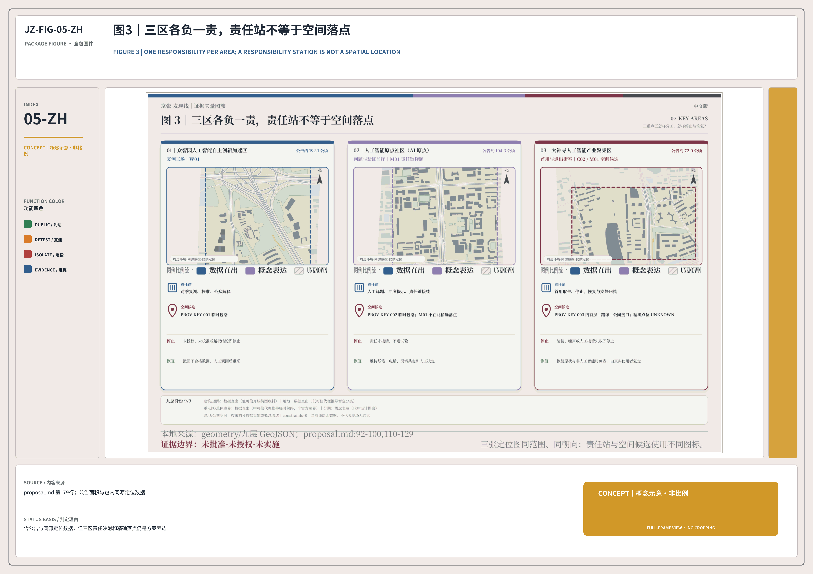
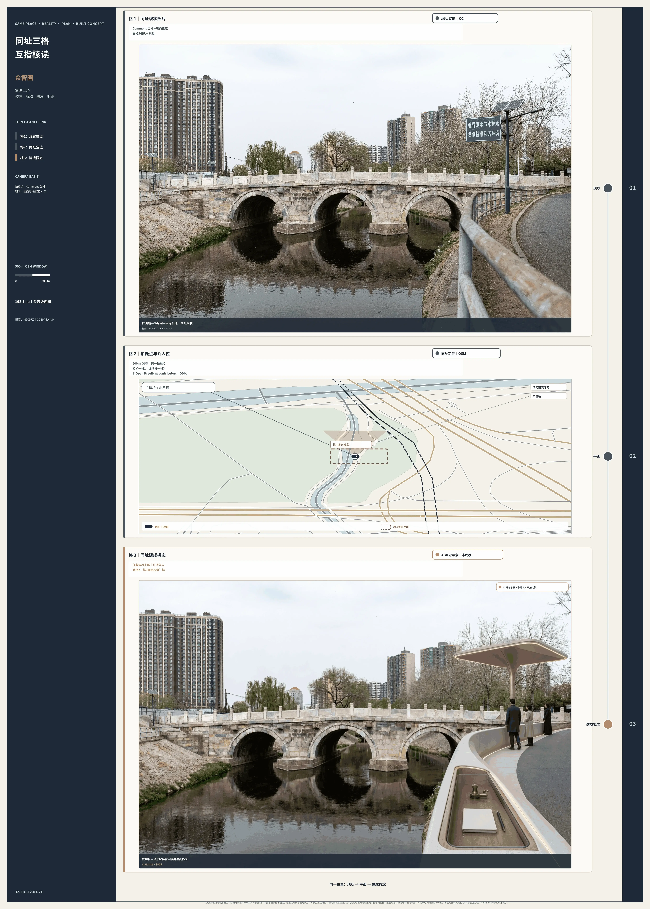
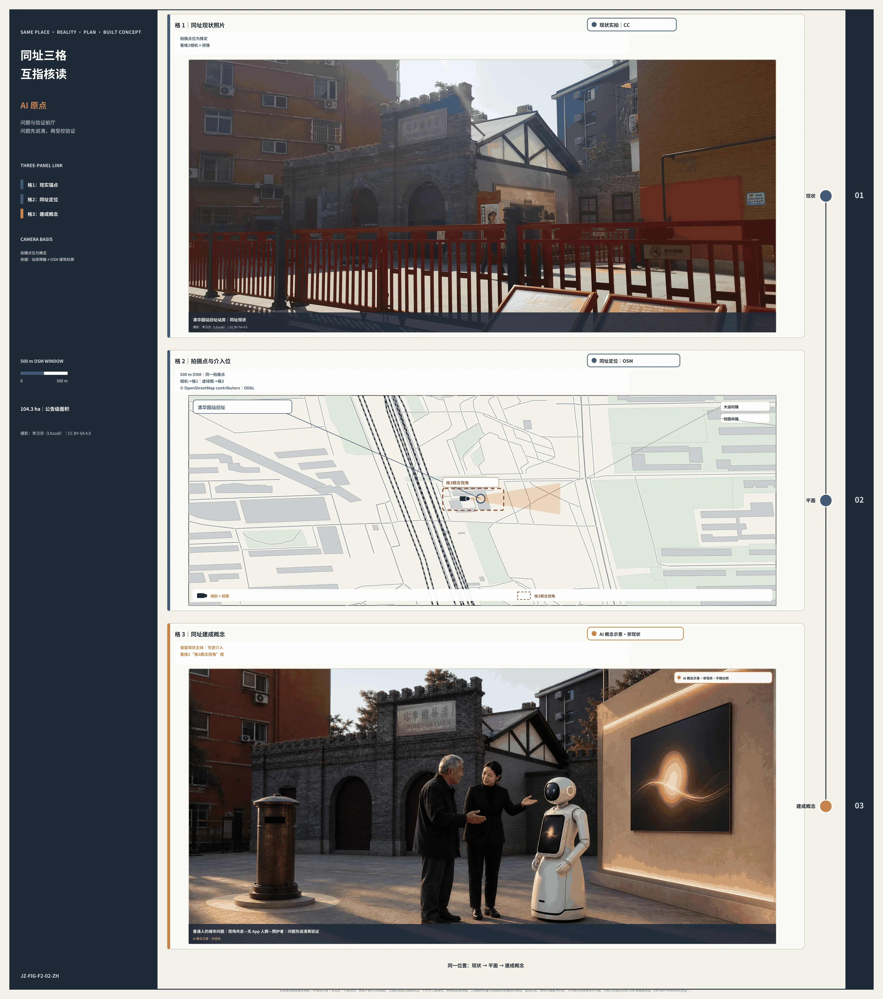
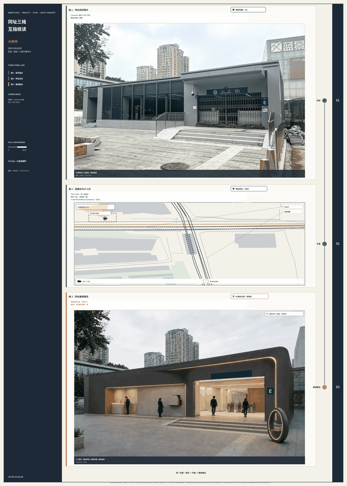
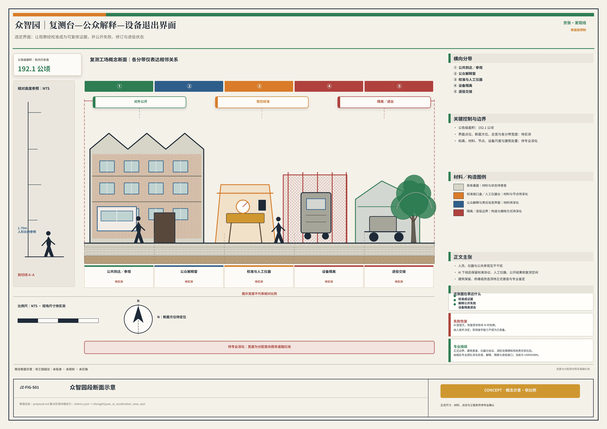
本图分带宽度为分配意向，条件性尺寸依据见〈V16｜M01 三态共基准概念剖面组〉（DB11/T 1116—2024 提取值）。
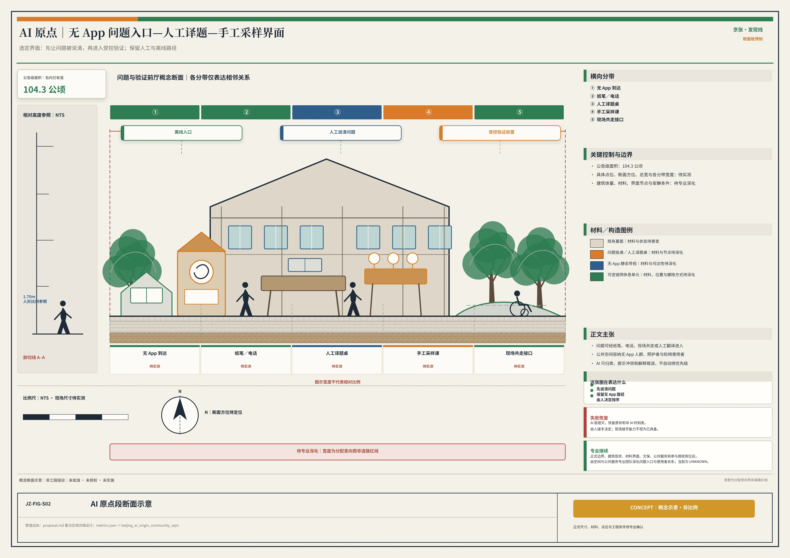
本图分带宽度为分配意向，条件性尺寸依据见〈V16｜M01 三态共基准概念剖面组〉（DB11/T 1116—2024 提取值）。
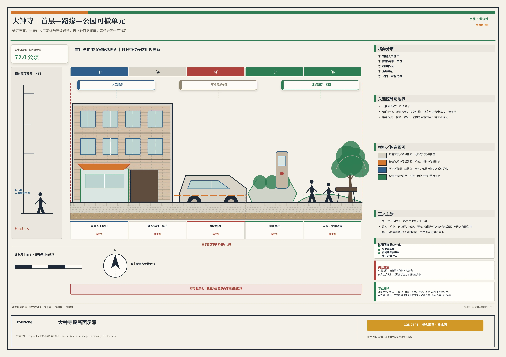
本图分带宽度为分配意向，条件性尺寸依据见〈V16｜M01 三态共基准概念剖面组〉（DB11/T 1116—2024 提取值）。
校准与独立复测
此处的动作
让问题经由独立复测，才进入下一段；不把概念工场写成已建成设施。
停止条件
运营主体未确认，不进入下一步。问题进入与人工译题验证
此处的动作
把问题送入受控验证；不把概念展示写成已发生的城市服务。
停止条件
遗产影响未审清，不新增设施。获授权后的有限首用与退出
此处的动作
真实首用候选：比较取舍与退出，不承诺客流、收益或实施。
停止条件
社区承载待核，不放大客流。192.1 ha / 104.3 ha / 72.0 ha / 精确边界缺失 / provisional；复测、译题验证、首用退出三种责任不可互换。
06
SIX REQUIRED THREADS / 官方六任务
本节把六项官方任务逐项列出，方便查看每项回应到哪一步。
六项官方任务逐项摆明，做到哪一步一眼就能看清。
BIND-09
本节列出十张任务卡各自服务谁、AI 做什么、人工办法是什么，以及什么情况下停止。
十张任务卡一张不少，先把小月河、路边停车和活动安排三张做深，不再加第十一张。
不用 App 的人用纸笔提问；AI 不自动排优先级，非 AI 入口中断即停。
学生跨天气观察热、水、通行，AI 只做异常初筛；未授权、未校准或越权发结论即停。
骑手、居民查道路责任；AI 只提示责任字段冲突，不判产权；无人工查询申诉通道即停
老人和轮椅使用者走完再复走一段真实通行；最慢群体变差、消防受阻或人工问询失效即停
骑手补货、商户短停与居民通行争路缘；AI 只用聚合数据比较三案，责任未接不试。
外地患者查经核目录与人工转接；不诊断、不分号、不承诺号源，人工窗口中断即停。
患者与陪护在合成桌面比较公共服务步骤；不接真实患者数据，不替代临床决定。
学生和教师用纸图、人工仪器与 AI 对照；AI 只提示采样质量，不跟踪、不评分。
居民和商户核查供给、时段与安静冲突；不做消费画像，未核条目不写成事实。
商户和居民比较三案与无活动对照；AI 只做聚合比较，最后由人拍板，人工问询保留。
五组任务要求必须同时可见。
案例不是装饰，八类机制不能缺项。
场景必须回到人、空间和运营。
未来公共空间仍要服从专业边界。对应征集任务书：『打造标志性的城市景观节点』。对应征集任务书：『探索“AI+”公共空间的特色场景』／『探索绿色空间服务人工智能发展的功能场景设计』。
历史是发动机，不是复古装饰。
所有活动仍是候选，不冒充排期。
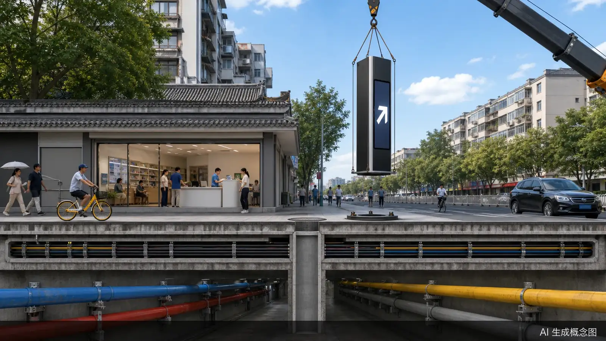
AI 生成概念图。
一个街区被切开：日常在地面，人工在店内，箭头屏 AI 构件由吊车在半空撤离；地下只保留可信市政管线。
建筑、构件、人员和地下层均为概念表达，不代表真实标高、管线或施工条件。对应征集任务书：『探索分布式能源、端侧算力等AI产业新型服务设施与传统三大设施的融合发展模式和实施路径』。
与正文一致：地面日常和人工服务保留，箭头屏 AI 构件可由吊车撤离，地下仅作传统设施融合的概念剖切；图中标高、管线和施工条件不是真实工程资料。
K4
本节说明验证结果怎样回到公众决定，未通过时怎样停止、撤回或恢复。
合格发现回到公共决定；不合格就停止、撤回或恢复。BIND-13
本节说明计划先试哪一小段、开始前要把哪些责任说清，以及怎样根据试验数据决定继续或撤回。
建议甲方确认车站—商业—公园—社区这段路，责任说清后再决定是否做 30 到 90 天、随时能撤的试验；这不是建设工期。

AI 生成概念图。
无台阶共享铺装上，小车队承担装卸，人工在旁装货、复核、调度，行人继续通行。
地点、车辆、人员、部署和运营状态均为概念设定。对应征集任务书：『完善非机动车停放等静态交通组织』。
与正文一致：无台阶共享铺装上，小车承担装卸，人工继续装货、复核和调度，行人仍可通行；地点、车辆、人员、部署与运营状态均为概念设定。
尺度校核：以站立人物 1.70 m、轮椅坐姿 1.32 m、视高 1.55 m 为校核基准，复核行人、装卸人员、小车、共享铺装和通行带的相对尺度；当前图未建立可量取比例，零台阶表达不得替代现场高差复核，结果为 UNKNOWN。
BIND-14
本节说明贡献、纠错、失败和退出怎样一起进入公开档案。
京张把事做准，中关村允许试错，AI 必须对人负责；公共荣誉既记贡献，也记纠错、失败和退出。

与正文一致：退役机器人由维护者拆解，维护与退役档案向公众可读；该图只表达贡献、纠错、失败和退出都应留档，不证明设备或档案设施已经运行。
尺度校核：以站立人物 1.70 m、轮椅坐姿 1.32 m、视高 1.55 m 为校核基准，复核维护者、退役机器人、维护架、档案柜与公众取阅界面的相对尺度；当前图未建立可量取比例，结果为 UNKNOWN。
07
OUTPUT INDEX / 全包二十三对正式图与十卡
本节提供二十三对正式图的快速索引，告诉读者每张图回答什么、证据状态和去哪里查。
全包二十三对正式图均已挂载；以下十项保留为快速导览，图中继续区分真实数据、临时口径与 UNKNOWN。
当前全包二十三对正式展示图已生成并挂载，状态为 23/23；以下清单是十项快速导览。
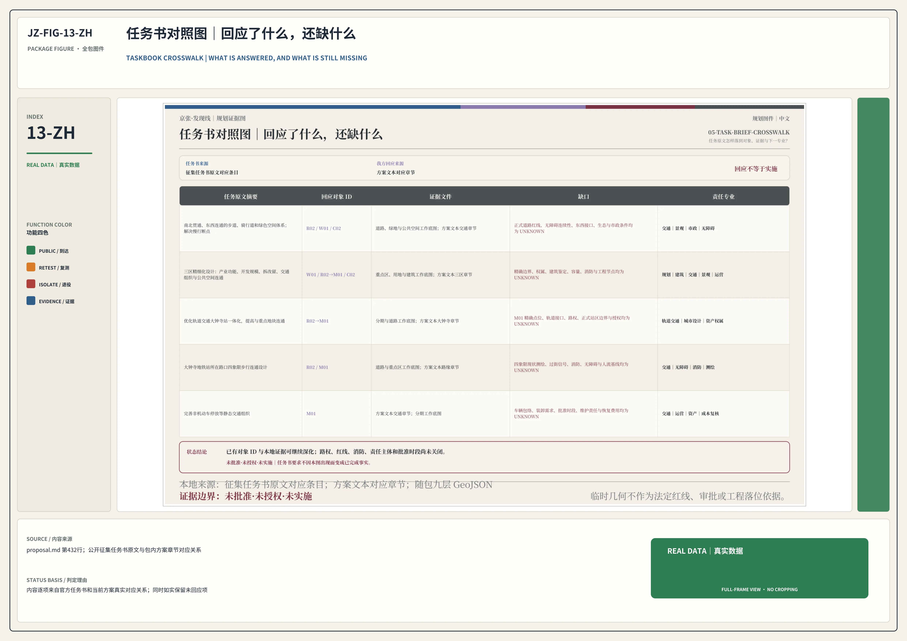
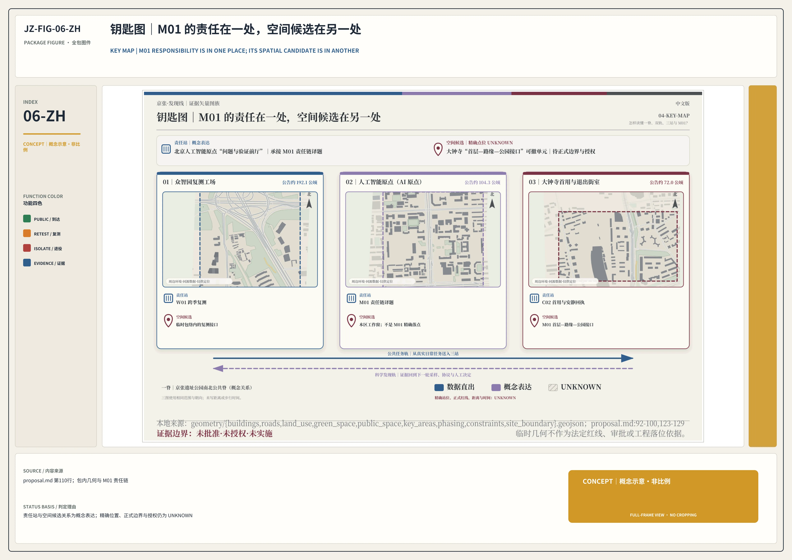
规划哪里，哪些范围与几何已知或待核？
已挂载；公告面积已知，精确边界待核怎样连接高校、科研、社区、商业和公共空间？
已挂载；结构与专业图层一并显示三个重点区各自解决什么、怎样接续？
已挂载升级版；真实几何可核，精确法定边界待核日常任务能否连续完成，候选断点在哪？
已挂载；现场共走与正式底图仍需后续补证谁决定，何时复测、停止和恢复？
已挂载；UNKNOWN 原样显示同一处路缘，日常、首用、人工接手和恢复怎样只改一项？
已挂载；确定性矢量制图｜非比例概念表达同一基准下，AI 关、有限首用与停止恢复怎样并列？
已挂载；确定性矢量制图｜非比例概念表达任务原文怎样落到对象、证据与下一专业？
已挂载；回应不等于实施AI 层退出后，人工与日常任务是否继续？
已挂载；开启与关闭状态同图对照M01 的责任站与空间候选怎样分开读取？
已挂载；图件角色与编号集中说明全包正式展示图
已挂载
场景卡
深层字段已装配
任务线程
待证据回填
四件介入物 / 装、拆、恢复
本节列出四件可拆走的设施分别保留什么、增加什么、禁止什么，以及怎样安装、拆除和恢复。
概念示意，不是施工依据；具体点位、工程做法、实施条件与责任人待正式确认。


本节按评委看的七件事，列出方案怎样回答、证据在哪里，以及和任务书有什么关系。
| 评审维度 | 本方案回应 | 证据指针 |
|---|---|---|
| 任务书相关性 | 官方任务索引只用“已回答”“概念级回答”“UNKNOWN＋接续条件”，不以概念回答替代正式资料、授权或实测。 | #tasks；proposal.md:515-519；compliance_matrix.json#/requirements |
| 原创性 | 发现护照 M01 用同一 ID 记录问题、三案比较、责任、复测、停止与恢复。 | #m01-responsibility；proposal.md:66；V14/V16 |
| AI 与城市规划创新性 | AI 只整理、比较和提示；人负责授权、取舍与纠错，不合格就停止、撤回或恢复原样。 | #why-ai；proposal.md:141；compliance_matrix.json agent.3 |
| 可实施性 | 受控 HOLD：实施主体、需求基线、预算、恢复费用和运营接收均为触发后事项；当前由第五道门、project_budget 公式登记及 D05/M01-6 依赖行受控管理。 | #m01-recovery；proposal.md:351,451,458；metrics.json#/metrics/project_budget/formula |
| 公共利益与包容性 | 公共服务保留人工窗口、电话、纸质目录、静态导视、座椅和可达路径；技术故障先核人工接管能否恢复基本任务。 | #no-ai-matrix；proposal.md:309；metrics.json#/metrics/c02_non_ai_service_completion_rate |
| 风险与合规意识 | 无正式资料支持的责任、资金、权属、尺寸、容量、程序与运营事项均标 UNKNOWN；临时边界、OSM 和概念干预持续标明状态。 | #evidence；proposal.md:489-501；design_depth_matrix.json risk_missing_data |
| 表达完整度 | 中英页面均保留责任、失败、UNKNOWN 与未实施边界；正文提供相邻证据指针，机器文件保存来源、公式、任务覆盖和设计深度。 | #evidence；proposal.md/proposal.en.md:114,139；Figure 3/5 pairs |
图像为项目概念成图的只读裁切；源图未改。责任人栏按当前事实留空。
本节集中展示八张 AI 生成的概念影像，并说明它们不是实拍或真实现状。
以下八张为 AI 生成写实风格概念影像，非实拍，人物为虚构，用于呈现方案氛围与使用场景，不表示真实现状。


本节用表格列出四件设施怎样装、怎样拆、撤场后怎样检查是否恢复。
只列正文已经出现的构件；每项尺寸、点位和做法均为候选，等待专业复核。
| 构件 | 尺寸口径（候选） | 装配／拆除 | 恢复验收 |
|---|---|---|---|
| 遗存轨可移除垫道 | 候选·待专业复核 | 横向铺在遗存轨上；构件可移除 | 移除垫道，复测轨面高差；由无障碍、遗产保护与运营专业复核 |
| 带蘑菇急停钮的试验叫停桩 | 候选·待专业复核 | 试验落位与拆除方式待专业复核 | 恢复原状；点位、审批与运维责任待专业复核 |
| 快拆法兰轻薄终端 | 候选·待专业复核 | 以快拆法兰落地；拆除方式与退役盖板待复核 | 人工窗口和休息区继续服务；点位、数量、版本与退役安排待复核 |
| 箭头屏 AI 构件 | 候选·待专业复核 | 由吊车撤离；地面日常与店内人工服务保留 | 地下只保留可信市政管线；真实标高、管线与施工条件待专业复核 |
本节画清四件设施怎样和轨道、地面或管线连接，并列出暂定尺寸、拆除步骤和仍待核实的现场条件。
构件自身尺寸为设计原型，尺寸链可复算；接口与场地尺寸标范围或未验证项；概念比例，待测绘与专业复核。
口径说明：图中全部尺寸与数量为概念原型的设计假设值，取自常见无障碍与市政设施尺度惯例，只用于说明构件之间的相对关系；均非施工定值，正式设计以现行规范、专业审查与现场实测为准。
本节列出十件任务在不用 AI 时由谁来办、怎样办，以及人工路线也失败时何时停止。
表内人物均为设定人物·非访谈。
| 场景卡 | 谁在用（设定人物·非访谈） | 不用 AI 怎么办完 | 人工路径也断时的停止条件 |
|---|---|---|---|
| G01 | 不会用智能手机的老人、社区或街区协调员。 | 纸笔、电话、人工编码和联席会，AI 不定优先级。 | 非 AI 入口中断即停。 |
| W01 | 学生和老师、研究人员、养护和运营人员。 | 人工仪器、固定观察点；无真实数据不发布水质或安全结论。 | 未授权、未校准或越权发结论即停。 |
| R01 | 夜班骑手、社区或街区协调员。 | 正式查询、台账核对和现场联勘；AI 不判产权。 | 无人工查询申诉通道即停。 |
| R02 | 不会用智能手机的老人、坐轮椅的人、照顾家人的人和家长。 | 使用者和无障碍专业人员人工审计，保留静态导视。 | 最慢群体变差、消防受阻或人工问询失效即停。 |
| M01 | 夜班骑手、沿街商户。 | 固定装卸时段、静态车位与人工引导，不追踪骑手。 | 责任未接不试。 |
| H01 | 外地患者和陪护。 | 电话、纸质目录、人工咨询，不诊断、不分号、不承诺号源。 | 人工窗口中断即停。 |
| H02 | 外地患者和陪护、照顾家人的人和家长。 | 人工桌面推演，无医院授权不接真实患者数据。 | 不接真实患者数据，不替代临床决定。 |
| E01 | 学生和老师、研究人员。 | 教师带队、纸图、人工仪器，不跟踪学生、不自动评分。 | AI 只提示采样质量，不跟踪、不评分。 |
| C01 | 沿街商户、社区或街区协调员。 | 门面盘点和人工访谈，不做消费画像或行为操控。 | 不做消费画像，未核条目不写成事实。 |
| C02 | 沿街商户、夜班骑手、社区或街区协调员。 | 人工问询、静态导视、固定活动表和无活动对照日。 | 最后由人拍板，人工问询保留。 |
本节登记走廊附近的过街口、公交站、台阶、轮椅标注和公厕数据，并说明数据来源与核实状态。
OSM 社区数据（ODbL）·非官方测绘·拉取 2026-08-27
京张铁路遗址公园 OSM 社区绘制轮廓（way 122348403/1190723117）±300m
| OSM 编号 | 类别 | 关键标签 | 距线米数 |
|---|---|---|---|
way/116927089 | 台阶 | highway=steps | 37 m |
way/121981773 | 台阶 | highway=steps | 37 m |
way/925590928 | 台阶 | highway=steps · tactile_paving=yes | 207 m |
way/122349988 | 台阶 | highway=steps | 231 m |
way/122349997 | 台阶 | highway=steps | 236 m |
way/122349985 | 台阶 | highway=steps | 238 m |
way/122349999 | 台阶 | highway=steps | 238 m |
way/122350000 | 台阶 | highway=steps | 240 m |
way/739522018 | 台阶 | highway=steps | 249 m |
way/1007627234 | 台阶 | highway=steps | 262 m |
way/122349998 | 台阶 | highway=steps | 277 m |
way/122349995 | 台阶 | highway=steps | 280 m |
way/122349994 | 台阶 | highway=steps | 281 m |
way/121982773 | 台阶 | highway=steps | 291 m |
way/121982778 | 台阶 | highway=steps | 294 m |
way/1047353834 | 台阶 | highway=steps | 296 m |
node/4703201229 | 轮椅标注 | wheelchair=yes | 37 m |
node/1360087386 | 轮椅标注 | barrier=gate · wheelchair=no | 47 m |
node/13097927117 | 轮椅标注 | wheelchair=no | 121 m |
node/10699314663 | 轮椅标注 | barrier=gate · wheelchair=yes | 143 m |
node/12468087969 | 轮椅标注 | wheelchair=yes | 148 m |
node/10173071022 | 轮椅标注 | amenity=research_institute · wheelchair=yes | 213 m |
node/6616040058 | 轮椅标注 | wheelchair=no | 220 m |
node/1350216506 | 轮椅标注 | wheelchair=no | 229 m |
node/10173071020 | 轮椅标注 | amenity=research_institute · wheelchair=yes | 239 m |
node/10702077765 | 轮椅标注 | barrier=gate · wheelchair=yes | 249 m |
node/6562541709 | 公厕 | amenity=toilets | 66 m |
node/6616040057 | 公厕 | amenity=toilets | 217 m |
样例编号
node/1367469197 · 3 mnode/1367469200 · 3 mnode/11836573372 · 7 m样例编号
node/10029341058 · 4 mnode/1811066556 · 4 mnode/1499686367 · 14 m| OSM 编号 | 类别 | 关键标签 | 距线米数 |
|---|---|---|---|
node/1811066556 | 公交站 | highway=bus_stop · name=大运村路北口 | 4 m |
node/10029341058 | 公交站 | highway=bus_stop · name=大石桥南 | 4 m |
node/1499686367 | 公交站 | highway=bus_stop · name=地铁五道口站 | 14 m |
node/1811066555 | 公交站 | highway=bus_stop · name=大运村路北口 | 16 m |
node/1675895291 | 公交站 | highway=bus_stop · name=五道口公交场站 | 25 m |
node/1675895286 | 公交站 | highway=bus_stop · name=五道口公交场站 | 30 m |
node/13742869200 | 公交站 | highway=bus_stop · name=清华东路西口 | 39 m |
node/2469776265 | 公交站 | highway=bus_stop · name=五道口北 · tactile_paving=yes | 42 m |
node/2469786645 | 公交站 | highway=bus_stop · name=地铁五道口站 | 54 m |
node/9907403365 | 公交站 | highway=bus_stop · name=展春园西路南口 | 107 m |
node/9907403364 | 公交站 | highway=bus_stop · name=展春园西路南口 | 132 m |
node/9907403366 | 公交站 | highway=bus_stop · name=展春园西路北口 | 141 m |
node/2469781614 | 公交站 | highway=bus_stop | 154 m |
node/2469781615 | 公交站 | highway=bus_stop | 154 m |
node/9907403367 | 公交站 | highway=bus_stop · name=展春园西路北口 | 157 m |
node/2469781630 | 公交站 | highway=bus_stop · name=王庄路北口 | 159 m |
node/2469781631 | 公交站 | highway=bus_stop · name=王庄路南口 | 163 m |
node/9950985223 | 公交站 | highway=bus_stop · name=大运村公交场站 | 188 m |
node/9950985222 | 公交站 | highway=bus_stop · name=大运村公交场站 | 198 m |
node/10029341051 | 公交站 | highway=bus_stop · name=大石桥南 · tactile_paving=yes | 198 m |
node/1367489096 | 公交站 | highway=bus_stop · name=地铁知春路站 | 237 m |
node/1420957578 | 公交站 | highway=bus_stop · name=五道口 · tactile_paving=yes | 241 m |
node/10029341047 | 公交站 | highway=bus_stop · name=西王庄小区 | 250 m |
node/10029341045 | 公交站 | highway=bus_stop · name=西王庄小区 | 252 m |
node/9980842163 | 公交站 | highway=bus_stop · name=五道口 · tactile_paving=yes | 258 m |
node/8246976675 | 公交站 | highway=bus_stop · name=双清路南口 | 274 m |
node/10029341048 | 公交站 | highway=bus_stop · name=双清路南口 | 289 m |
node/6562541709 | 公厕 | amenity=toilets | 66 m |
node/6616040057 | 公厕 | amenity=toilets | 217 m |
way/116927089 | 台阶 | highway=steps | 37 m |
way/121981773 | 台阶 | highway=steps | 37 m |
way/925590928 | 台阶 | highway=steps · tactile_paving=yes | 207 m |
way/122349988 | 台阶 | highway=steps | 231 m |
way/122349997 | 台阶 | highway=steps | 236 m |
way/122349985 | 台阶 | highway=steps | 238 m |
way/122349999 | 台阶 | highway=steps | 238 m |
way/122350000 | 台阶 | highway=steps | 240 m |
way/739522018 | 台阶 | highway=steps | 249 m |
way/1007627234 | 台阶 | highway=steps | 262 m |
way/122349998 | 台阶 | highway=steps | 277 m |
way/122349995 | 台阶 | highway=steps | 280 m |
way/122349994 | 台阶 | highway=steps | 281 m |
way/121982773 | 台阶 | highway=steps | 291 m |
way/121982778 | 台阶 | highway=steps | 294 m |
way/1047353834 | 台阶 | highway=steps | 296 m |
node/4703201229 | 轮椅标注 | wheelchair=yes | 37 m |
node/1360087386 | 轮椅标注 | barrier=gate · wheelchair=no | 47 m |
node/13097927117 | 轮椅标注 | wheelchair=no | 121 m |
node/10699314663 | 轮椅标注 | barrier=gate · wheelchair=yes | 143 m |
node/12468087969 | 轮椅标注 | wheelchair=yes | 148 m |
node/10173071022 | 轮椅标注 | amenity=research_institute · name=美术学院 · wheelchair=yes | 213 m |
node/6616040058 | 轮椅标注 | name=天视明眼镜批发城 · wheelchair=no | 220 m |
node/1350216506 | 轮椅标注 | wheelchair=no | 229 m |
node/10173071020 | 轮椅标注 | amenity=research_institute · name=环境学院 · wheelchair=yes | 239 m |
node/10702077765 | 轮椅标注 | barrier=gate · wheelchair=yes | 249 m |
node/1367469197 | 过街口 | crossing=unmarked · highway=crossing | 3 m |
node/1367469200 | 过街口 | crossing=uncontrolled · highway=crossing | 3 m |
node/11836573372 | 过街口 | crossing=uncontrolled · highway=crossing | 7 m |
node/10695574573 | 过街口 | crossing=uncontrolled · highway=crossing | 9 m |
node/10695574575 | 过街口 | crossing=uncontrolled · highway=crossing | 12 m |
node/10695574572 | 过街口 | crossing=uncontrolled · highway=crossing | 13 m |
node/11055757015 | 过街口 | highway=crossing | 13 m |
node/11848866290 | 过街口 | crossing=uncontrolled · highway=crossing | 14 m |
node/1364164087 | 过街口 | crossing=unmarked · highway=crossing | 15 m |
node/9332434945 | 过街口 | crossing=traffic_signals · highway=crossing | 15 m |
node/6924398139 | 过街口 | highway=crossing | 17 m |
node/9332434946 | 过街口 | crossing=traffic_signals · highway=crossing | 17 m |
node/10695574571 | 过街口 | crossing=uncontrolled · highway=crossing | 22 m |
node/10695574574 | 过街口 | crossing=uncontrolled · highway=crossing | 22 m |
node/10161372772 | 过街口 | crossing=traffic_signals · highway=crossing | 26 m |
node/10695574578 | 过街口 | crossing=uncontrolled · highway=crossing | 27 m |
node/1367469189 | 过街口 | highway=crossing | 28 m |
node/9708800684 | 过街口 | crossing=traffic_signals · highway=crossing | 32 m |
node/11848804709 | 过街口 | crossing=uncontrolled · highway=crossing | 36 m |
node/10161372774 | 过街口 | crossing=traffic_signals · highway=crossing | 40 m |
node/12786304297 | 过街口 | crossing=uncontrolled · highway=crossing | 41 m |
node/13097626171 | 过街口 | highway=crossing | 42 m |
node/9859715773 | 过街口 | highway=crossing | 45 m |
node/12770147876 | 过街口 | crossing=uncontrolled · highway=crossing | 59 m |
node/1367469175 | 过街口 | crossing=unmarked · highway=crossing | 61 m |
node/9859715766 | 过街口 | highway=crossing | 61 m |
node/10695605923 | 过街口 | crossing=uncontrolled · highway=crossing | 74 m |
node/10695605922 | 过街口 | crossing=uncontrolled · highway=crossing | 76 m |
node/10695605927 | 过街口 | crossing=uncontrolled · highway=crossing | 79 m |
node/10695605920 | 过街口 | crossing=uncontrolled · highway=crossing | 84 m |
node/10695605926 | 过街口 | crossing=uncontrolled · highway=crossing | 88 m |
node/10695605919 | 过街口 | crossing=uncontrolled · highway=crossing | 101 m |
node/10695605918 | 过街口 | crossing=uncontrolled · highway=crossing | 102 m |
node/1367428394 | 过街口 | crossing=unmarked · highway=crossing | 110 m |
node/11848804708 | 过街口 | crossing=uncontrolled · highway=crossing | 117 m |
node/11848804701 | 过街口 | crossing=uncontrolled · highway=crossing | 123 m |
node/1367428438 | 过街口 | crossing=uncontrolled · highway=crossing | 124 m |
node/1367428395 | 过街口 | crossing=unmarked · highway=crossing | 130 m |
node/12770147890 | 过街口 | crossing=uncontrolled · highway=crossing | 130 m |
node/11848804705 | 过街口 | crossing=uncontrolled · highway=crossing | 132 m |
node/12770147893 | 过街口 | crossing=uncontrolled · highway=crossing | 135 m |
node/12770147891 | 过街口 | crossing=uncontrolled · highway=crossing | 137 m |
node/12770147894 | 过街口 | crossing=uncontrolled · highway=crossing | 148 m |
node/1367406314 | 过街口 | highway=crossing | 151 m |
node/1367428400 | 过街口 | crossing=uncontrolled · highway=crossing | 156 m |
node/12770147897 | 过街口 | crossing=uncontrolled · highway=crossing | 159 m |
node/12770147899 | 过街口 | crossing=uncontrolled · highway=crossing | 164 m |
node/12770147898 | 过街口 | crossing=uncontrolled · highway=crossing | 168 m |
node/12770171514 | 过街口 | crossing=uncontrolled · highway=crossing | 168 m |
node/10893676214 | 过街口 | highway=crossing | 181 m |
node/10893676206 | 过街口 | highway=crossing | 183 m |
node/10893676207 | 过街口 | highway=crossing | 183 m |
node/10893676208 | 过街口 | highway=crossing | 190 m |
node/10161372771 | 过街口 | highway=crossing | 192 m |
node/10893676212 | 过街口 | highway=crossing | 194 m |
node/8093518696 | 过街口 | highway=crossing | 212 m |
node/9859715785 | 过街口 | highway=crossing | 222 m |
node/7006452373 | 过街口 | highway=crossing | 231 m |
node/12770184047 | 过街口 | crossing=uncontrolled · highway=crossing | 233 m |
node/1367428409 | 过街口 | crossing=unmarked · highway=crossing | 266 m |
node/10893676222 | 过街口 | highway=crossing | 286 m |
node/1367439162 | 过街口 | crossing=uncontrolled · highway=crossing | 289 m |
node/9729800198 | 过街口 | highway=crossing | 290 m |
node/10695574568 | 过街口 | crossing=marked · highway=crossing | 298 m |
社区地图数据，非官方测绘；未标注不等于设施不存在；台阶与轮椅不可用点是复核起点，不是结论。
R02 仍由使用者和无障碍专业人员人工审计并保留静态导视；本登记只给人工复核定位起点。
BIND-11
EVIDENCE / UNKNOWN / BOUNDARY
本节把材料按能证明到哪一步分成六级，并把已核、候选、待核和临时示意分开列出。
证据只分六级，九类专业图里两类是临时资料、七类还没有，已知、临时、建议和不知道分开写清。
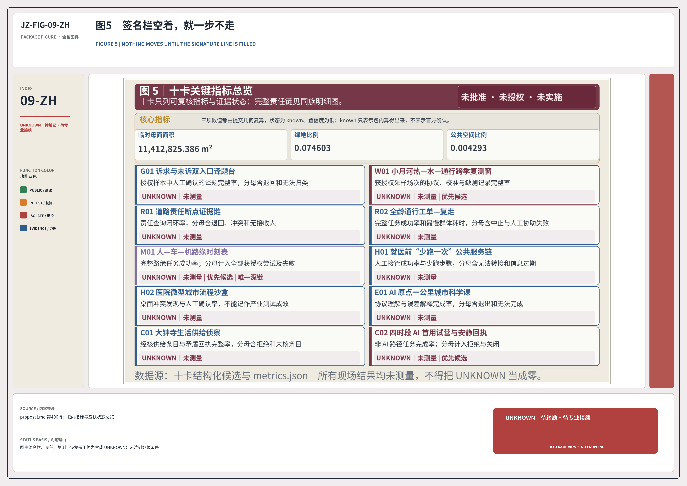
十卡的来源、运算与责任链见〈责任、依赖与交接明细〉图与 `metrics.json`；十卡在空间上的落位见〈三区各负一责〉图。
本图只列十项现场待测指标，十项状态全部为 UNKNOWN｜未测量；`metrics.json` 另行登记的 28 项指标中有 17 项现在就有值，这些是包内基线、几何比例与仿真审计类指标，不是十卡现场成效结果，见本节末的指标总账。
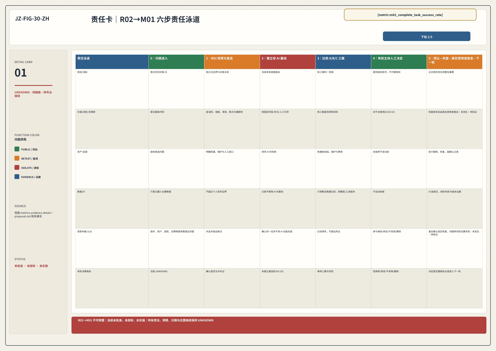
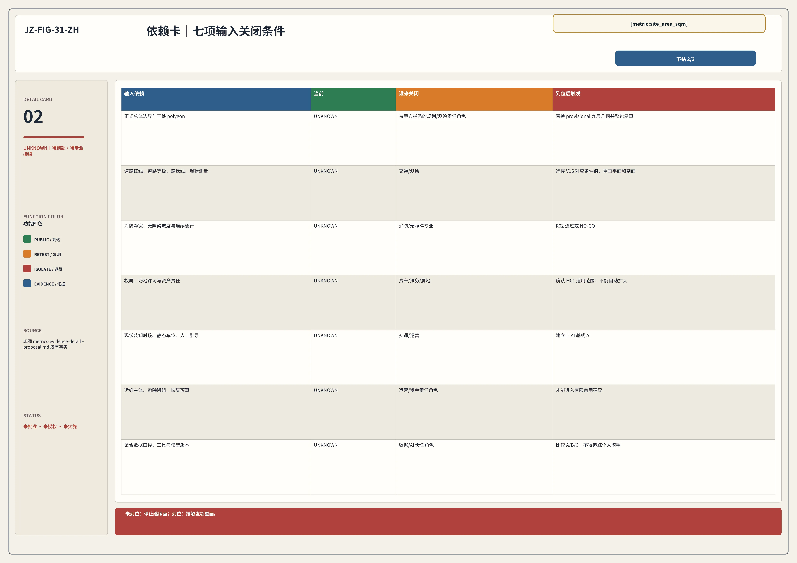
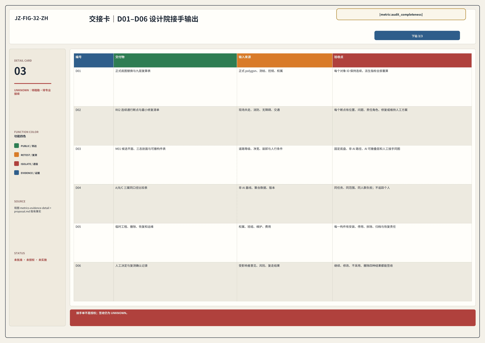
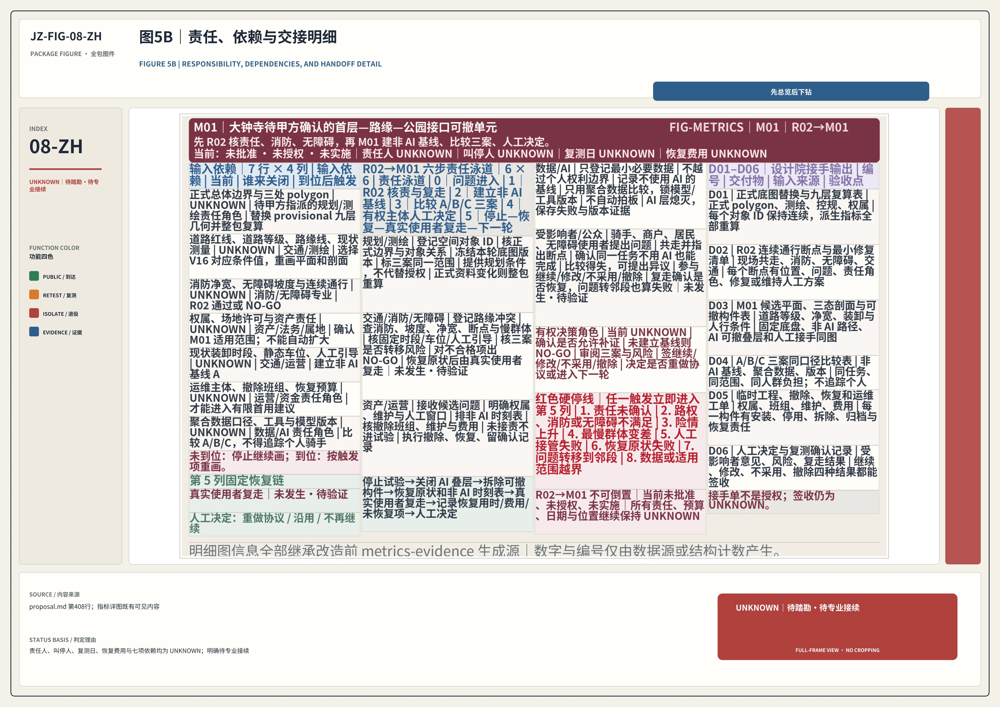
唯一证据阶梯
2 / 9 临时专业图层，仅可作 provisional 示意。
7 / 9 专业图层未建，不得用概念媒体冒充。
官方公告面积43.6、11.4平方公里与三区合计368.4公顷；三区名称与顺序。
W01、M01、C02验证路径，等待现场数据与有权主体确认。
路权、消防、无障碍、四时段基线和各类现场数据。
空间三层图、人物路径与三案取舍，只用于交互说明。
五本账：规划设计管正式边界、控规、权属与测绘；
公共基础管交通、公共服务与市政容量；
场景验证管协议、工单、修复与复测；
运营维护管维护者、复核日与退役办法；
社会协同管受影响者、人工取舍与责任。
simulation.json 复算 24 项离线合成任务的成功、调度结构、审计完整和能耗超预算读数，并核对协议、工具版本、失败分母与独立复现的建议核验分工；授权现场基线、正式协议条件和真实复测结果仍为 UNKNOWN。project_budget 的“项目级范围×可追溯单价×全生命周期与恢复成本”公式、D05／M01-6 依赖，以及预算、采购、法务、土地或利益冲突复核职能角色和“核验人姓氏＋工号＋日期”的建议签认格式；项目级资金来源、预算边界、恢复清单和支付责任仍为 UNKNOWN。本列只说明当前证据链能判到哪一步，不表示任何门已通过、已批准或已授权。
28 项指标全部登记算式；其中 17 项现在就有值（11 项可由本包数据复算，6 项引用官方公开给定值），11 项保持受控 UNKNOWN 且各自带算式与触发条件；六道门没有一道被跳过。
本页是概念展厅与交互工程，不是已批准实施方案；二十三对正式图仍是概念建议与证据导航，不是法定规划图。
APPENDIX / DATA + COMPLIANCE
本节集中列出已登记的数据、精确边界和专业资料的缺口，以及每项当前能确认到哪一步。
这里只把冻结数据、未决项和核验状态集中展开；UNKNOWN 表示待正式资料确认。
重要边界披露：临时边界=粗略 provisional 非官方红线；正式边界到手后，九层、三项指标和相关图文须重新计算。
当前总览由 site_boundary、key_areas、land_use、roads、green_space、public_space、buildings、constraints、phasing 九层组成。它是可复算的 formal 候选集，不是法定控规或工程成果。
统筹研究范围约 43.6 平方公里，总体设计范围约 11.4 平方公里，三处重点区合计约 368.4 公顷。公告面积已知，精确边界仍 UNKNOWN。
三处重点区是众智园AI自主创新加速区、北京AI原点社区、大钟寺AI产业聚集区。当前只有临时包络；官方四至与精确 polygon 为 UNKNOWN。
用地层含 983 个要素，以 OSM 底料临时分类并用未分类余面闭合母面。它只支持候选拓扑；正式现状用地与法定控规为 UNKNOWN。
道路层含 564 条 OSM 主要道路中心线，只作道路与接驳关系底料。道路红线、路缘工程线位和正式交通方案为 UNKNOWN。
绿地层含 124 个要素，公共空间层含 20 个要素；两者都按 OSM 存量保守子集与 B 新增干预面扣重后取并集。当前口径置信度低，正式边界或现状资料到手后须重算。
建筑层含 1699 个 OSM 建筑 footprint 保守子集，只表达已映射基底。建筑用途、权属、高度、结构安全和拆改留为 UNKNOWN。
分期层含 4 个要素：W01、R02→M01、C02 三节点为首期候选，B 余面为后续占位。实施主体、审批路径、工期和开工日期为 UNKNOWN。
场景卡固定为 G01、W01、R01、R02、M01、H01、H02、E01、C01、C02 共十张；W01、M01、C02 是优先验证候选，仅 M01 展开最深责任链。十卡均未获授权、未测试。
三项数值都由提交几何复算，状态为 known、置信度为低；known 只表示包内算得出来，不表示官方确认。
agent.1 至 agent.6 对应六项官方任务；每个区块显示冻结内容、相关图卡和证据状态，不冒充完成。十张场景卡用于支撑任务覆盖，不新增第十一张。
当前本地官方四门均已通过，self_check 为 formal-review-ready；三处重点区精确边界仍属 provisional minor，待官方精确 polygon 补齐。formal-review-ready 只表示可进入正式评审，不代表已提交、已受理、入选或实施。
包内来源表已登记八案 23 条一手来源，8/8 个案例均达到每案至少 2 条；只支持案例身份、事实性转述与机制比较，不包含视觉资产复用权，也不证明京张已有同等设施、授权或成效。
临时粗略边界仍只可 provisional 使用。
页面概念图由 OpenAI image_gen（GPT Image 2）按项目自写提示词生成，仅作概念解释；Logo 已替换为不含 Lovart 转换路径的项目自绘矢量，被替换的历史转换版本不随包；概念图与 Logo 均不构成商标清权。
页面不依赖远程字体：中文字形由随包的 visual/assets/offline-cjk-font.css 以 data URI 内嵌的两个 Source Han Serif SC Regular 子集提供，已按 SIL Open Font License 1.1 改名后随包再分发；其余字形回退到本机系统字体。
图中 OSM 派生内容保留 © OpenStreetMap contributors / ODbL 1.0 署名。
冻结假设表共 16 项，覆盖官方边界、控规、道路红线、权属、建筑、市政、授权、运营、成本、资金、实施时序、作者身份和“聚集区”术语。未取得对应正式资料的项目保持 UNKNOWN。